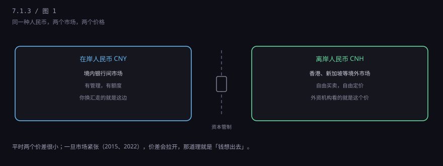
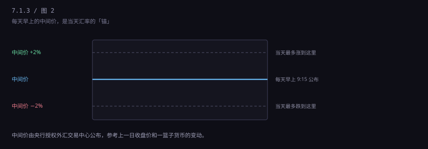
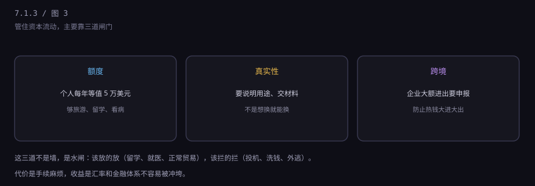
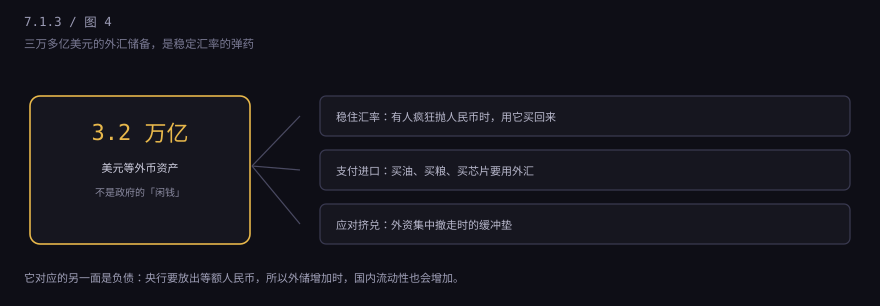

约 0.3 万字 · 4 张图 · 为什么换汇有额度、为什么有两个价、 为什么每天早上有个「中间价」
你的操作是：选币种、输金额、选用途、确认。系统背后做的事是： 查你的年度额度还剩多少、查这个用途要不要材料、按当时的牌价算人民币、 扣款、把美元记进你的外汇账户。
如果是拿现金，还要预约——网点不一定有美元现钞。 超过一定金额（目前是等值 1 万美元以上）的现金提取，银行要登记。 这些都是同一套管理的一部分。
你说"旅游"，银行不会让你出示机票；但如果你一年换了五次、每次都是 5 万， 系统就会标记，下一次可能就要你提供材料。这套"事前宽松、事后盯人"的思路， 贯穿整个外汇管理。
要理解人民币的管理，必须先分清两件事，这是整个体系的骨架。
第一种叫经常项目。 就是你日常的对外收支：货物贸易（进出口）、服务贸易（旅游、留学、就医、运费）、 还有工资、稿费这类收益。这一块早就可兑换了—— 你出国旅游换汇、企业进口付汇，凭真实材料就能办，没有数量上的审批。
第二种叫资本项目。 指的是"钱作为资本进出"：直接投资（开公司、买厂）、证券投资（买境外股票债券）、 信贷、房地产。这一块是有管理的——不是完全不让，是要按渠道、按额度、按登记来办。
所以你听到的"人民币不可自由兑换"，准确说法是：经常项目可兑换，资本项目有管理。 这句话听着绕，但它是理解后面所有细节的钥匙。
同一个"人民币"，其实有两个市场。
在岸（CNY）是境内银行间市场，受上面说的那套管法约束； 离岸（CNH）在香港、新加坡这些境外市场，外国人之间自由买卖，价格由市场定。

既然有闸门，两个价就会出现差价。平时差得很小（几十个基点）， 但市场一紧张，差价就拉开——因为离岸市场能自由卖人民币， 一有风吹草动，大家抢着换成美元，离岸价就跌得比在岸快。
2015 年 8 月 11 日那次汇改之后，价差一度拉到一千多点。当时香港的人民币存款 几个月里少了一大截。这个价差后来被当成一个指标：价差越大，说明"想出去的钱"越多。
每天早上九点十五分，中国外汇交易中心会公布一个数字： 人民币对美元汇率中间价。当天银行间市场的成交价， 只能在这个中间价上下 2% 的范围里浮动。

为什么要这么一个东西？因为完全放开会有两个问题：一是大起大落， 进出口企业没法做预算；二是容易被投机资金冲击，1997 年亚洲金融危机就是这么打垮泰国的。
但完全定死也不行。定死意味着央行要随时按固定价买卖，外汇储备消耗极快， 而且黑市会立刻出现。所以选中间路线：给一个参考价，允许在带子里波动。
中间价怎么定？现行机制大致是"收盘价 + 一篮子货币汇率变化 + 逆周期因子"。 翻译成人话：昨天市场收在哪儿、美元对欧元日元这些货币是涨是跌、 再加上一个用来削平"追涨杀跌"情绪的调整项。这套机制 2017 年引入， 目的就是不让市场情绪自我强化。
除了价格上的缰绳，还有流量上的控制。三处最主要。

第一道是额度。个人每年有等值 5 万美元的便利化额度， 在这个额度内，凭身份证就能办，不用交一堆材料。
第二道是真实性。额度内也要选用途；超过额度，或者用途看起来不对， 就得提供证明：录取通知书、医院证明、机票、合同。 银行有一项法定义务叫"展业三原则"——了解你的客户、了解你的业务、尽职审查。
第三道是跨境资金流动管理。企业大额对外付款要申报， 银行要报送给外汇管理局；个人用别人的额度"蚂蚁搬家"式换汇， 是被明令禁止的，查到了会进"关注名单"，之后几年办外汇业务都会被重点盯。
这里有个特别常见的误会，值得单独说一段。
5 万美元不是"你一年最多只能换 5 万美元"，而是"5 万美元以内，银行不用你交材料"。 超过 5 万，只要理由真实、材料齐全，照样能办——留学学费一年六万、八万很常见， 拿着录取通知书和学费单去银行，走的是"不占用便利化额度"的通道。
真正不能做的，是这几件事：用别人的额度凑数（"蚂蚁搬家"）、 虚构用途（说旅游其实去买房）、通过地下钱庄过账、用境外账户收境内打过去的钱做投资。 这些不是"手续问题"，是违规甚至违法。
新闻里常说"外汇储备 3.2 万亿美元"。这个数字经常被误读成"国家的存款"。 它更准确的身份是央行的对外资产，对应着央行放出的人民币负债。

它的第一个用途是稳住汇率：市场上有人疯狂卖人民币买美元， 央行就拿美元买回来，把价格托住。第二个是支付进口： 买石油、买粮食、买芯片都要外汇，得留够。第三个是应对突发： 外资集中撤离、外债集中到期时，它是缓冲垫。
它不能随便花在国内。道理很简单：那些美元在美国、在欧洲， 拿到国内来用，得先换成人民币，一换就会增加国内货币投放，可能引发通胀。 所以"把外储分了"这种说法，在操作上是行不通的。
这套制度不是凭空设计的，是被三次真实的事件逼出来的。
第一次是 1997 年亚洲金融危机。 泰国放开资本项目，热钱涌进来炒房炒股，然后一夜撤走， 泰铢崩了，银行倒了，经济倒退好几年。中国当时因为资本项目没放开，躲过一劫。
第二次是 2015 年。 股市异常波动加上"8·11"汇改，人民币贬值预期起来，一个月内外汇储备少了上千亿美元。 那之后，对跨境资金流动的监测明显收紧，"蚂蚁搬家"这类行为开始被严查。
第三次是 2022 年。 美联储连续大幅加息，美元指数冲到二十年高位，全球货币普遍贬值。 因为有一道道闸门，人民币的贬值幅度比多数货币小，资本外流的冲击也被缓冲了。
这三次的共同结论是：对一个制造业为主、金融体系还在成熟中的大国， 完全放开资本项目，风险大于收益。这是政策选择，不是能力问题。
这套设计当然有成本，而且成本落在具体的人身上。
所以这件事没有"对不对"，只有"权衡"。你享受的是汇率相对稳定、金融体系不被冲垮； 付出的是跨境资金进出的自由度。这两件事很难同时要。
四个具体场景，知道这些能少跑腿、少踩坑。
出国留学要交学费。 别在手机银行硬换，5 万额度不够。带录取通知书、学费清单去柜台， 走"不占用便利化额度"的通道，一次能办完。
想买点海外资产。 目前个人合规的渠道主要是 QDII 基金（合格境内机构投资者）， 通过它间接买境外市场。直接汇款到境外券商账户，是违规的。
有人跟你说"帮你换汇，汇率比银行好"。 这就是地下钱庄或者"对敲"，钱可能被用于洗钱，你的账户会被冻结。 每年都有大量这类案子，账户一冻就是几个月。
看新闻说"人民币破 7"。 这个"7"指的是在岸即期汇率。破不破 7 没有魔法意义， 真正的信号是：中间价有没有连续大幅调整、离岸和在岸的价差有没有拉开。
下一节换一个方向，讲一种很多人听说过、但说不清是什么的东西：USDT。 它标价永远一美元，却不在任何银行的账上。